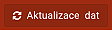
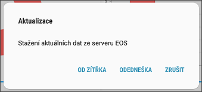
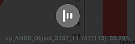
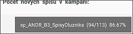

AKTUALIZACE dat
V celé aplikaci je možné "občerstvovat" data pomocí tlačítka Aktualizace dat, které je umístěné v levé horní části Dashboardu.

Po stisknutí tlačítka se objeví dialogové okno, ve kterém si uživatel vybere, zda se stáhnou dvě nejbližší kampaně včetně dneška (pokud uživatel stahuje data ráno), nebo včetně zítřka (pokud uživatel stahuje data večer na další den).

Jakmile si uživatel vybere, obrazovka potemní a začne probíhat kontrola a úprava dat. Pomocí časového razítka systém kontroluje, zda v některé části proběhla změna, kterou je třeba přenést do dat tabletu (nové spisy, zápisy, opravy a změny z web aplikace atd.).
V první řadě aplikace sesynchronizuje data týkající se dvou vybraných kampaní. V tuto chvíli je obrazovka zešedlá a uprostřed běží informace o synchronizaci.

Jakmile proběhne synchronizace obou vybraných kampaní, pak je systém uvolněn pro další práci uživatele a vše běží na pozadí. Informace o probíhající synchronizaci běží v informačním okně vpravo dole.

Pokud jsou data nedávno synchronizovaná (neproběhlo tam mnoho změn), je synchronizace velmi rychlá. V případě nových dat, velikých změn či přihlášení jiného uživatele k tabletu probíhá synchronizace na pozadí delší dobu.
Synchronizace probíhá vždy při zapnutém tabletu. Jakmile přejde tablet do úsporného režimu, či je vypnut tlačítkem pro usnutí, je synchronizace pozastavena a pokračuje po opětovném probuzení.
Pokud jsou tablet či aplikace vypnuty, synchronizace je přerušena a je třeba jí spustit znovu pomocí tlačítka.